花叔弹药库 · PPT 样张 × 20 .agents/skills/huashu-design（design-styles.md v3.2）
huashu-design 风格库的 PPT 专区。每种风格都已从单帧样张升级为 6 页可翻页 demo（同一「AI 写作产线」内容骨架，同内容对比风格），点卡片打开翻页体验。
「做 PPT / 做原型」→ 三方向门从库中抽风格出初稿；也可直接点名 打开 demo ↗
打开 demo ↗Neo-Swiss Billboard
新瑞士大字报
花叔Design 三方向门可抽到此风格；也可直接点名「Neo-Swiss Billboard」
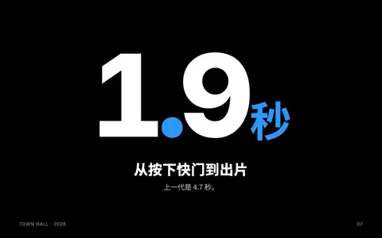
打开 demo ↗Black Big-Number Stage
黑底巨型数字剧场（乔布斯 Keynote 系）
花叔Design 三方向门可抽到此风格；也可直接点名「Black Big-Number Stage」
 打开 demo ↗
打开 demo ↗Mono-Brand Type-as-Hero
单色品牌撞色满版
花叔Design 三方向门可抽到此风格；也可直接点名「Mono-Brand Type-as-Hero」
 打开 demo ↗
打开 demo ↗Full-Bleed Gradient Manifesto
全幅渐变宣言
花叔Design 三方向门可抽到此风格；也可直接点名「Full-Bleed Gradient Manifesto」
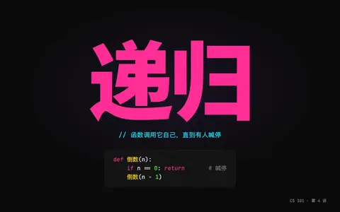
打开 demo ↗Candy-Color Lecture Stage
CS50 深底糖果色大字
花叔Design 三方向门可抽到此风格；也可直接点名「Candy-Color Lecture Stage」
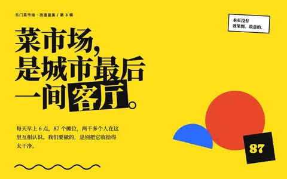
打开 demo ↗Playful Collins Editorial
Mailchimp 荧光黄玩味
花叔Design 三方向门可抽到此风格；也可直接点名「Playful Collins Editorial」
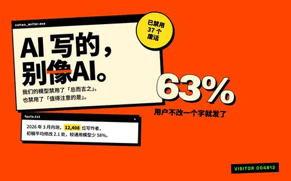
打开 demo ↗Irreverent Pop
Reddit 橙玩梗混排
花叔Design 三方向门可抽到此风格；也可直接点名「Irreverent Pop」
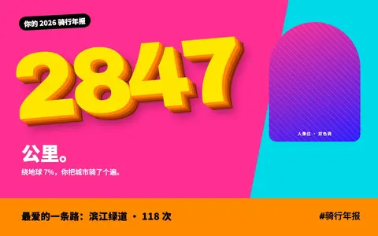
打开 demo ↗Y2K Inflated Wrapped
Spotify Wrapped 膨胀 3D 数字
花叔Design 三方向门可抽到此风格；也可直接点名「Y2K Inflated Wrapped」
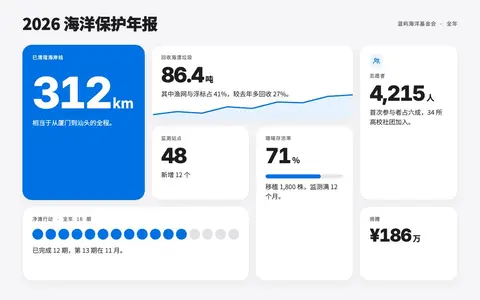
打开 demo ↗Bento Grid
Apple 便当格卡片
花叔Design 三方向门可抽到此风格；也可直接点名「Bento Grid」
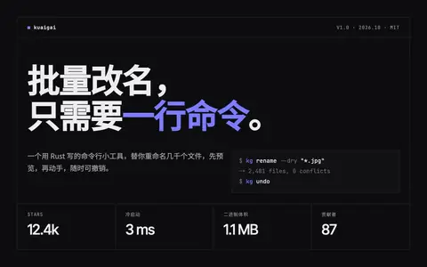
打开 demo ↗Dark Hairline Terminal
Linear / Vercel 暗色细线终端
花叔Design 三方向门可抽到此风格；也可直接点名「Dark Hairline Terminal」
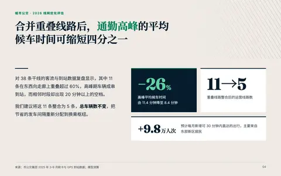
打开 demo ↗Two-Font Consulting
McKinsey 双字体咨询版
花叔Design 三方向门可抽到此风格；也可直接点名「Two-Font Consulting」
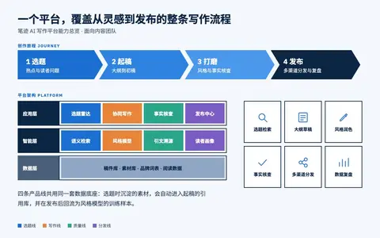
打开 demo ↗Diagram-Driven Isotype
箭头流程企业版
花叔Design 三方向门可抽到此风格；也可直接点名「Diagram-Driven Isotype」
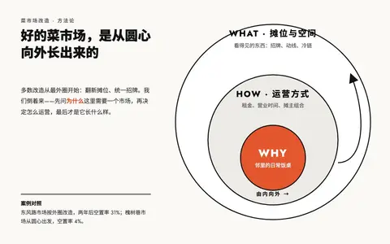
打开 demo ↗Diagrammatic Minimalism
黄金圆环式单母图
花叔Design 三方向门可抽到此风格；也可直接点名「Diagrammatic Minimalism」
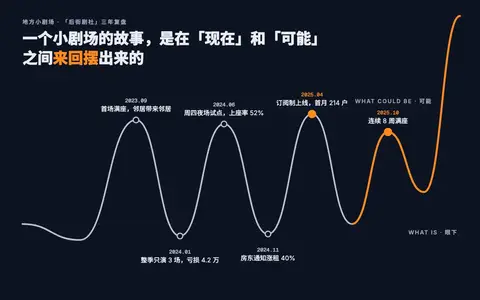
打开 demo ↗Narrative Sparkline
Duarte 叙事波形
花叔Design 三方向门可抽到此风格；也可直接点名「Narrative Sparkline」
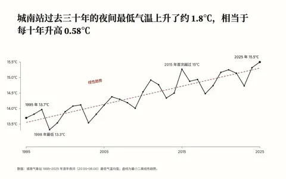
打开 demo ↗Assertion-Evidence
Tufte 断言-证据
花叔Design 三方向门可抽到此风格；也可直接点名「Assertion-Evidence」
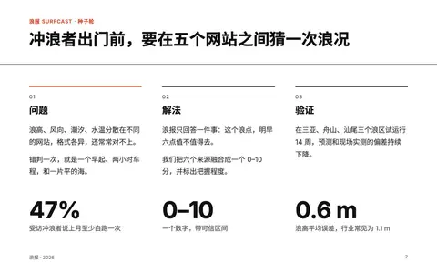
打开 demo ↗Institutional Swiss
Sequoia 瑞士机构极简
花叔Design 三方向门可抽到此风格；也可直接点名「Institutional Swiss」
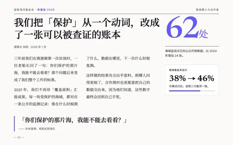
打开 demo ↗Editorial Longform
Stripe 年报长文流
花叔Design 三方向门可抽到此风格；也可直接点名「Editorial Longform」
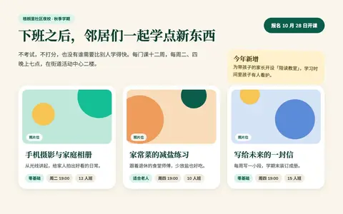
打开 demo ↗Humanist Rounded Cards
Khan 人文圆角卡片
花叔Design 三方向门可抽到此风格；也可直接点名「Humanist Rounded Cards」
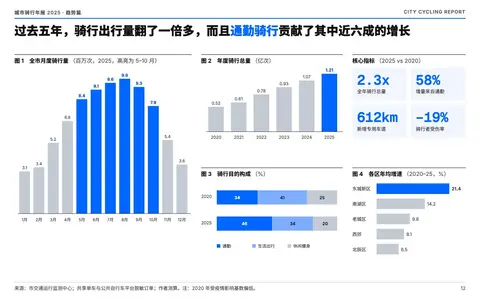
打开 demo ↗Dense Research Report
Meeker 研报密集图表
花叔Design 三方向门可抽到此风格；也可直接点名「Dense Research Report」
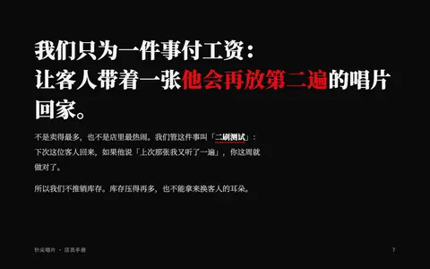
打开 demo ↗All-Text Manifesto
Netflix 文化 deck 纯文字
花叔Design 三方向门可抽到此风格；也可直接点名「All-Text Manifesto」
花叔弹药库 · 东亚专区 × 12 .agents/skills/huashu-design（design-styles.md v3.2）
中文与东亚传统视觉：宋刻本、民国书衣、香港街招、杉浦康平、田中一光等。每种风格已从单帧样张升级为 6 页可翻页 demo，点卡片打开翻页体验。
跨媒介风格，deck / 页面可用；直接点名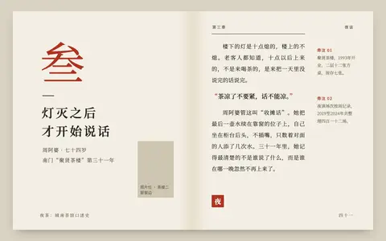
打开 demo ↗吕敬人书籍设计
Lu Jingren Bookcraft
直接点名「吕敬人书籍设计」
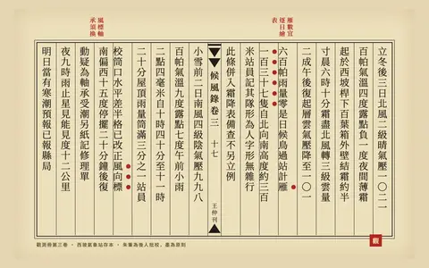
打开 demo ↗宋刻本版式
Song Block Print
直接点名「宋刻本版式」
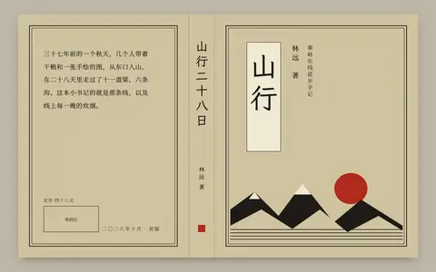
打开 demo ↗民国书衣
Republic-era Book Jacket
直接点名「民国书衣」
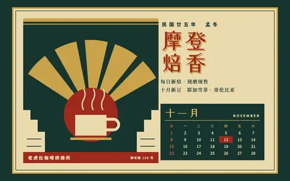
打开 demo ↗上海摩登装饰艺术
Shanghai Deco
直接点名「上海摩登装饰艺术」
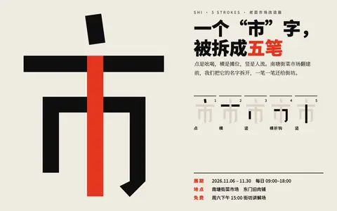
打开 demo ↗中文实验字体海报
Hanzi Experimental Poster
直接点名「中文实验字体海报」
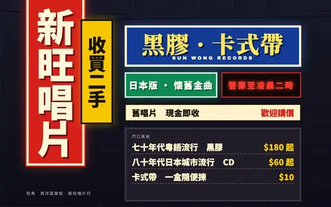
打开 demo ↗香港街招
Hong Kong Street Signs
直接点名「香港街招」
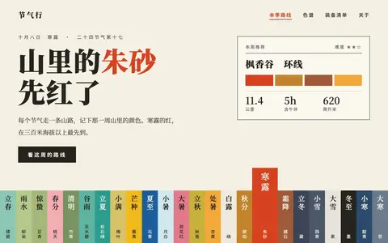
打开 demo ↗传统色节气色谱
Traditional Colors × Solar Terms
直接点名「传统色节气色谱」
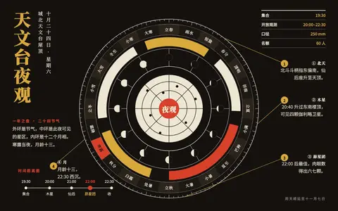
打开 demo ↗杉浦康平信息曼荼罗
Sugiura Info Mandala
直接点名「杉浦康平信息曼荼罗」
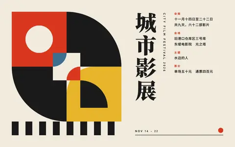
打开 demo ↗田中一光几何构成
Tanaka Geometric Poster
直接点名「田中一光几何构成」
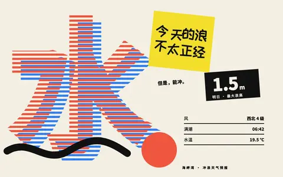
打开 demo ↗服部一成玩味错位
Hattori Playful Offset
直接点名「服部一成玩味错位」
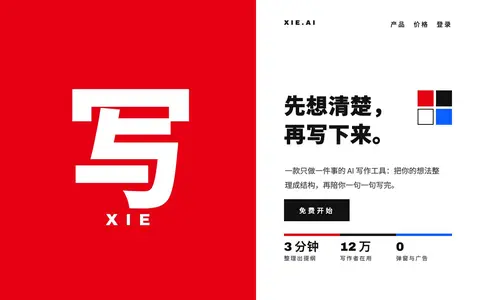
打开 demo ↗佐藤可士和极简符号
Sato Minimal Symbol
直接点名「佐藤可士和极简符号」
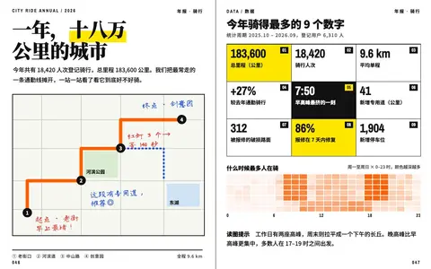
打开 demo ↗日式生活杂志密排
Japanese Magazine Dense Layout
直接点名「日式生活杂志密排」